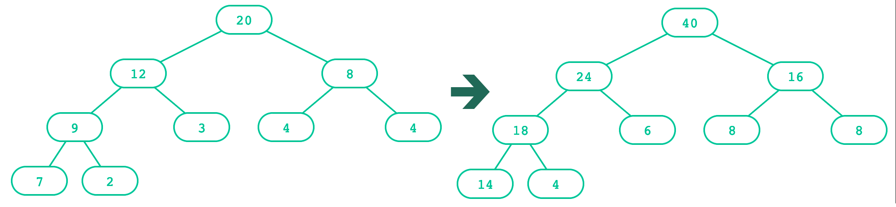
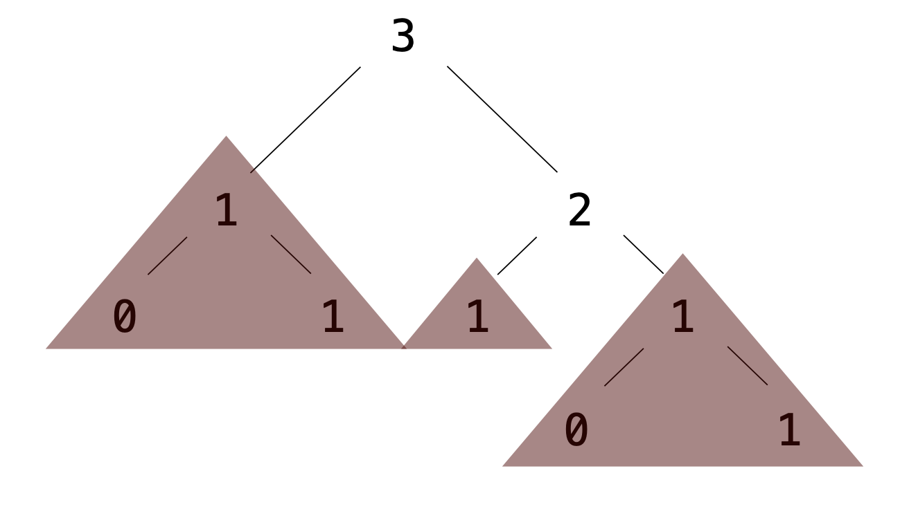

Trees
- Press O or Escape for overview mode.
- Visit this link for a nice printable version
- Press the copy icon on the upper right of code blocks to copy the code
Class outline:
- Trees
- Tree class
- Tree processing
- Tree creation
- Tree mutation
Trees
Trees

| Recursive description | Relative description |
|---|---|
|
|
Trees, trees, everywhere!
Directory structures

Parse trees
For natural languages...

Key: S = Sentence, NP = Noun phrase, D = Determiner, N = Noun, V = Verb, VP = Verb Phrase
Parse trees
For programming languages, too...

Key: E = expression
Tree class
A Tree object
A Tree is an object composed of other Tree objects, so its constructor must have a way of passing in children Trees.
Our approach:
t = Tree(3, [
Tree(1),
Tree(2, [
Tree(1),
Tree(1)
])
])
The Tree object (cont'd)
A Tree should store these instance variables:
label |
The root label of the tree |
branches |
A list of branches (subtrees) of the tree |
And expose this instance method:
is_leaf |
Returns a boolean indicating if tree is a leaf |
t = Tree(3, [
Tree(1),
Tree(2, [
Tree(1),
Tree(1)
])
])
t.label # 3
t.is_leaf() # False
t.branches[0].is_leaf() # True
The Tree class
t = Tree(3, [Tree(1), Tree(2, [Tree(1), Tree(1)])])
t.label # 3
t.is_leaf() # False
t.branches[0].is_leaf() # True
How could we write the class definition for Tree?
class Tree:
def __init__(self, label, branches=[]):
self.label = label
self.branches = list(branches)
def is_leaf(self):
return not self.branches
A fancier Tree
This is what assignments actually use:
class Tree:
def __init__(self, label, branches=[]):
self.label = label
for branch in branches:
assert isinstance(branch, Tree)
self.branches = list(branches)
def is_leaf(self):
return not self.branches
def __repr__(self):
if self.branches:
branch_str = ', ' + repr(self.branches)
else:
branch_str = ''
return 'Tree({0}{1})'.format(self.label, branch_str)
def __str__(self):
return '\n'.join(self.indented())
def indented(self):
lines = []
for b in self.branches:
for line in b.indented():
lines.append(' ' + line)
return [str(self.label)] + lines
It's built in to code.cs61a.org, and you can draw() any Tree!
Tree processing
Tree processing
A tree is a recursive structure.
Each tree has:
- A label
- 0 or more branches, each a tree
Recursive structure implies recursive algorithm!
Counting leaves
def count_leaves(t):
"""Returns the number of leaf nodes in T."""
if t.is_leaf():
return 1
else:
leaves_under = 0
for b in t.branches:
leaves_under += count_leaves(b)
return leaves_under
What's the base case? What's the recursive call?
Counting leaves (cont'd)
The sum()
function sums up the items of an iterable.
sum([1, 1, 1, 1]) # 4
That leads to this shorter function:
def count_leaves(t):
"""Returns the number of leaf nodes in T."""
if t.is_leaf():
return 1
else:
branch_counts = [count_leaves(b) for b in t.branches]
return sum(branch_counts)
Exercise: Printing trees
def print_tree(t, indent=0):
"""Prints the labels of T with depth-based indent.
>>> t = Tree(3, [Tree(1), Tree(2, [Tree(1), Tree(1)])])
>>> print(t)
3
1
2
1
1
"""
Exercise: Printing trees (solution)
def print_tree(t, indent=0):
"""Prints the labels of T with depth-based indent.
>>> t = Tree(3, [Tree(1), Tree(2, [Tree(1), Tree(1)])])
>>> print(t)
3
1
2
1
1
"""
print(indent * " " + t.label)
for b in t.branches:
print_tree(b, indent + 2)
Exercise: List of leaves
def leaves(t):
"""Return a list containing the leaf labels of T.
>>> t = Tree(20, [Tree(12, [Tree(9, [Tree(7), Tree(2)]), Tree(3)]), Tree(8, [Tree(4), Tree(4)])])
>>> leaves(t)
[7, 2, 3, 4, 4]
"""
Hint: If you sum a list of lists, you get a list containing the elements of those lists. The sum function takes a second argument, the starting value of the sum.
sum([ [1], [2, 3], [4] ], []) # [1, 2, 3, 4]
sum([ [1] ], []) # [1]
sum([ [[1]], [2] ], []) # [[1], 2]
Exercise: List of leaves (Solution)
def leaves(t):
"""Return a list containing the leaf labels of T.
>>> t = Tree(20, [Tree(12, [Tree(9, [Tree(7), Tree(2)]), Tree(3)]), Tree(8, [Tree(4), Tree(4)])])
>>> leaves(t)
[7, 2, 3, 4, 4]
"""
if t.is_leaf():
return [t.label]
else:
leaf_labels = [leaves(b) for b in t.branches]
return sum(leaf_labels, [])
Exercise: Counting paths
def count_paths(t, total):
"""Return the number of paths from the root to any node in T
for which the labels along the path sum to TOTAL.
>>> t = Tree(3, [Tree(-1), Tree(1, [Tree(2, [Tree(1)]), Tree(3)]), Tree(1, [Tree(-1)])])
>>> count_paths(t, 3)
2
>>> count_paths(t, 4)
2
>>> count_paths(t, 5)
0
>>> count_paths(t, 6)
1
>>> count_paths(t, 7)
2
"""
Exercise: Counting paths (solution)
def count_paths(t, total):
"""Return the number of paths from the root to any node in T
for which the labels along the path sum to TOTAL.
>>> t = Tree(3, [Tree(-1), Tree(1, [Tree(2, [Tree(1)]), Tree(3)]), Tree(1, [Tree(-1)])])
>>> count_paths(t, 3)
2
>>> count_paths(t, 4)
2
>>> count_paths(t, 5)
0
>>> count_paths(t, 6)
1
>>> count_paths(t, 7)
2
"""
if t.label == total:
found = 1
else:
found = 0
return found + sum([count_paths(b, total - t.label) for b in t.branches])
Creating trees
A function that creates a tree from another tree is also often recursive.

Creating trees: Doubling labels

def double(t):
"""Returns a tree identical to T, but with all labels doubled."""
if t.is_leaf():
return Tree(t.label * 2)
else:
return Tree(t.label * 2,
[double(b) for b in t.branches])
What's the base case? What's the recursive call?
Creating trees: Doubling labels
A shorter solution:
def double(t):
"""Returns the number of leaf nodes in T."""
return Tree(t.label * 2,
[double(b) for b in t.branches])
Explicit base cases aren't always necessary in the final code, but it's useful to think in terms of base case vs. recursive case when learning.
Tree mutation
Doubling a Tree

def double(t):
"""Doubles every label in T, mutating T.
>>> t = Tree(1, [Tree(3, [Tree(5)]), Tree(7)])
>>> double(t)
>>> t
Tree(2, [Tree(6, [Tree(10)]), Tree(14)])
"""
t.label = t.label * 2
for b in t.branches:
double(b)
Exercise: Pruning trees
Removing subtrees from a tree is called pruning.
Always prune branches before recursive processing.
def prune(t, n):
"""Prune all sub-trees whose label is n.
>>> t = Tree(3, [Tree(1, [Tree(0), Tree(1)]), Tree(2, [Tree(1), Tree(1, [Tree(0), Tree(1)])])])
>>> prune(t, 1)
>>> t
Tree(3, [Tree(2)])
"""
t.branches = [___ for b in t.branches if ___]
for b in t.branches:
prune(___, ___)
Exercise: Pruning trees (Solution)
Removing subtrees from a tree is called pruning.
Always prune branches before recursive processing.
def prune(t, n):
"""Prune all sub-trees whose label is n.
>>> t = Tree(3, [Tree(1, [Tree(0), Tree(1)]), Tree(2, [Tree(1), Tree(1, [Tree(0), Tree(1)])])])
>>> prune(t, 1)
>>> t
Tree(3, [Tree(2)])
"""
t.branches = [b for b in t.branches if b.label !=n]
for b in t.branches:
prune(b, n)